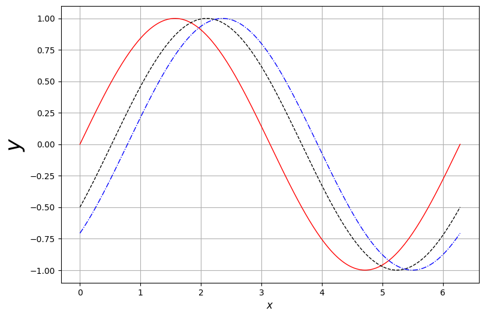
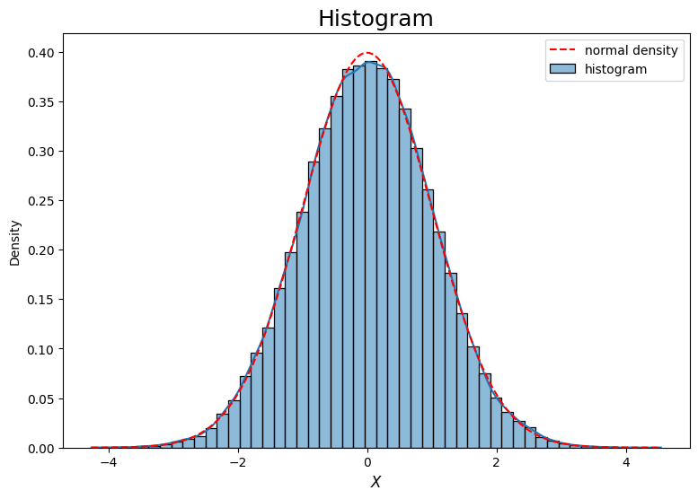
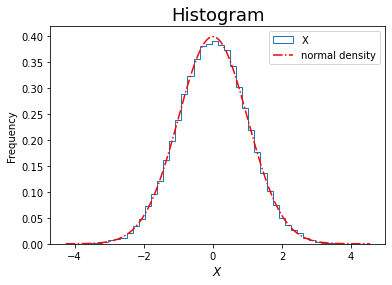
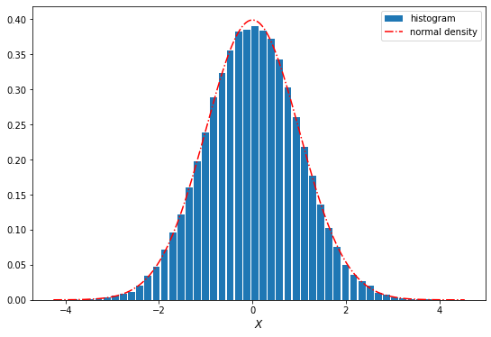

78+1290
\[ \newcommand{\bea}{\begin{eqnarray}} \newcommand{\eea}{\end{eqnarray}} \newcommand{\supp}{\mathrm{supp}} \newcommand{\F}{\mathcal{F} } \newcommand{\cF}{\mathcal{F} } \newcommand{\E}{\mathbb{E} } \newcommand{\Eof}[1]{\mathbb{E}\left[ #1 \right]} \newcommand{\Etof}[1]{\mathbb{E}_t\left[ #1 \right]} \def\Cov{{ \mbox{Cov} }} \def\Var{{ \mbox{Var} }} \newcommand{\1}{\mathbf{1} } \newcommand{\p}{\partial} \newcommand{\PP}{\mathbb{P} } \newcommand{\Pof}[1]{\mathbb{P}\left[ #1 \right]} \newcommand{\QQ}{\mathbb{Q} } \newcommand{\R}{\mathbb{R} } \newcommand{\DD}{\mathbb{D} } \newcommand{\HH}{\mathbb{H} } \newcommand{\spn}{\mathrm{span} } \newcommand{\cov}{\mathrm{cov} } \newcommand{\HS}{\mathcal{L}_{\mathrm{HS}} } \newcommand{\Hess}{\mathrm{Hess} } \newcommand{\trace}{\mathrm{trace} } \newcommand{\LL}{\mathcal{L} } \newcommand{\s}{\mathcal{S} } \newcommand{\ee}{\mathcal{E} } \newcommand{\ff}{\mathcal{F} } \newcommand{\hh}{\mathcal{H} } \newcommand{\bb}{\mathcal{B} } \newcommand{\dd}{\mathcal{D} } \newcommand{\g}{\mathcal{G} } \newcommand{\half}{\frac{1}{2} } \newcommand{\T}{\mathcal{T} } \newcommand{\bit}{\begin{itemize}} \newcommand{\eit}{\end{itemize}} \newcommand{\beq}{\begin{equation}} \newcommand{\eeq}{\end{equation}} \newcommand{\tr}{\mbox{tr}} \]
丁宏骏
李新宇
pythonpython
Quotes from Investopedia:
A financial market is a broad term describing any marketplace where buyers and sellers participate in the trade of assets such as equities, bonds, currencies and derivatives. Financial markets are typically defined by having transparent pricing, basic regulations on trading, costs and fees, and market forces determining the prices of securities that trade.
注:
Types of financial markets and their roles
For more details, visit Types of Financial Markets and their roles at Investopedia.
注:
一级市场, 又称发行市场, 初级市场 (Primary Market) 是处理新发行证券的金融市场, 筹集资金的公司, 政府或公共部门通过发行新的股票和债券来进行融资.
二级市场 (Secondary Market) 是买卖已经上市公司股票的资本市场. 二级市场可为金融商品的最初投资者提供资金的流动性. 一级市场和二级市场通过证券交易所进行联系.
股票交易属于场内交易, 也就是交易所交易, 因为所有交易是发生在固定的证券交易所, 有固定的交易时间和合约标准.
然而, 还有另一个系统, 这就是场外交易市场, 它的交易是由“经纪商” (称为做市商) 促成的, 他们提供金融产品的买卖价格, 有效地确定资产的价格. 现在已经基本上不存在了.
第三市场是指原来在证交所上市的股票移到以场外进行交易而形成的市场.
第四市场指许多机构大投资者, 进行上市股票和其他证券的交易, 完全撇开经纪商和交易所, 直接与对方联系, 采用这种方式进行证券交易, 形成了第四市场.
We will only cover the equity market and the liquidity pools in DeExs.
注:
远期合约: 约定在未来某一特定日期以今天商定的价格买入或卖出某种资产.
期货: 约定在未来某一特定日期以今天商定的价格买入或卖出某种资产, 但与远期合约不同的是, 期货合约是标准化的, 在交易所交易.
期权给予持有者权利而非义务, 在未来某个时间以预先确定的价格购买 (看涨期权, Call Option) 或出售 (看跌期权, Put Option) 一定数量的资产.
期权持有人支付一笔期权费 (Premium) 给期权卖方, 以换取这种选择权.
如果市场价格不利于期权持有人, 则可以选择不行使期权, 最大损失为已支付的期权费.
互换是一种协议, 其中两方同意在未来的一段时间内交换一系列现金流.
According to this article in the website of International Association for Quantitative Finance (IAQF) (used to be named as IAFE), financial engineering is
Therefore,
We shall mostly focus on the pricing of derivatives based on the principle of no arbitrage.
As pricing is concerned, in financial engineering we usually consider the following types of problems:
Quantitative finance is an interdisciplinary field, it requires hard skills in
Nowadays also requires
Excerpt from Quants: The Rocket Scientists of Wall Street in Investopedia,
As financial securities become increasingly complex, demand has grown steadily for people who not only understand the complex mathematical models that price these securities, but who are able to enhance them to generate profits and reduce risk. These individuals are known as quantitative analysts, or simply “quants.”
Quantitative analysts
Quants are briefly categorized as \(\mathbb{P}\) quants and \(\mathbb{Q}\) quants.
The mentality behind \(\mathbb P\) quant and the buy side is
The mentality behind \(\mathbb Q\) quant and the sell side is
In this course, we shall cover topics on both sides, though not evenly.
Please refer to this link in ARPM.co for more details on the interplay between \(\mathbb P\) quants and \(\mathbb Q\) quants.
\(\PP\) quant (Physical Probability Measure Quantitative Analyst, 物理测度下的量化分析) 关注的是资产在现实世界概率测度 (记作 \(\PP\)) 下的行为, 他们试图理解和预测市场的真实运动. 在买方 (buy side), 预测真实市场的价格走势、风险评估等.
E.g., Alibaba 的股票在涨, 你没有预测到, 却卖出了它.
\(\QQ\) quant (Risk-Neutral Probability Measure Quantitative Analyst, 风险中性测度下的量化分析) 关注的是在风险中性测度 (记作 \(\QQ\)) 下的资产价格行为. 在这个虚拟的概率空间下, 所有资产的期望收益率等于无风险利率.
在卖方 (sell side), 正确定价衍生品、避免套利.
Heuristically, pricing is a rule or a map that assigns a (unique, current) value to each (random) payoff/cashflow which can only be realized at the future investment horizon. The collection/universe of all the payoffs at the investment horizon is assumed to be equipped with a vector space structure. In other words, we would be able to add or subtract a payoff from another, and also be able to scale up or down by any (real, positive or negative) scalar. Thus, we can regard pricing as a function or a functional \(\Pi\) from the space of (random) payoffs to real numbers:
\[ \Pi : \mathcal P \to \R, \]
where \(\mathcal P\) is space of payoffs at investment horizon.
A pricing functional \(\Pi\) presumably bears the following axioms
By essentially the Riesz representation theorem, a pricing function/functional, should it exist, can be characterized by the expectation of a (random) payoff weighted by a stochastic discount factor.
The price of any asset in the universe is given by the an expectation of discounted payoff discounted by a stochastic discount factor.
In this course we shall explore the modeling of the pricing functional.
Two payoffs with equal values in all scenarios must have the same price.
If the payoff \(X\) dominates the payoff \(Y\), i.e., \(X > Y\) in any scenario, then the price of \(X\) must be higher than that of \(Y\).
The price of linear combination of the payoffs \(X\) and \(Y\) is the same linear combination of the price of \(X\) and \(Y\). That is,
\[ \Pi(\alpha X + \beta Y) = \alpha \Pi(X) + \beta \Pi(Y) \]
If the pricing function/functional satisfies the axioms, it can be represented as a discounted expectation. Precisely, for a given payoff \(X\), its price is given by
\[ \Pi(X) = \Eof{D X} \]
where \(D\) is a (positive) random variable called stochastic discount factor.
The \(\Eof{D}\) is the price of zero coupon bond since, the payoff of zero coupon bond of face value 1 is \(X \equiv 1\).
Intuitively, an arbitrage opportunity is a trade or a trading strategy that have positive payoff at the investment horizon with zero cost currently. In other words, we are able to acquire a financial position, be statically or dynamically, without being required to pay initially for entering the position.
Any viable financial model should not permit arbitrage opportunity.
In reality, arbitrage opportunity does exist. However, it disappears very quickly even much quicker now due to the advent of technology, since once it is exploited, sophisticated market participants will quickly take the advantage of it, then the market reacts to it so as to reach a new status without arbitrage opportunity.
Principle of no arbitrage is the core behind the theory of derivative pricing.
Explanations from Wikipedia.
The fundamental theorems of asset pricing (also: of arbitrage, of finance) provide necessary and sufficient conditions for a market to be arbitrage free and for a market to be complete.
To be more specific,
In a discrete (i.e. finite state) market, the following hold:
A discrete market, on a discrete probability space \((\Omega, \cF, \PP)\), is arbitrage-free if and only if there exists at least one risk neutral probability measure that is equivalent to the original probability measure, \(\PP\).
An arbitrage-free market \((S, B)\) consisting of a collection of stocks \(S\) and a risk-free bond \(B\) is complete if and only if there exists a unique risk-neutral measure that is equivalent to \(\PP\) and has numeraire \(B\).
Quotes from the Investopeida page:
What is DeFi ?
- an emerging peer-to-peer financial system that uses blockchain and cryptocurrencies to allow people, businesses, or other entities to transact directly with each other.
- The key principle behind DeFi is to remove third parties like banks from the financial system, thereby reducing costs and transaction times.
- In the U.S., the Federal Reserve and Securities and Exchange Commission (SEC) define the rules for centralized financial institutions like banks and brokerages, which consumers rely on to access capital and financial services directly.
- DeFi challenges this centralized financial system by empowering individuals with peer-to-peer transactions.
How does DeFi work?
- Through peer-to-peer financial networks, DeFi uses security protocols, connectivity, software, and hardware advancements.
- This system eliminates intermediaries like banks and other financial service companies. These companies charge businesses and customers for using their services, which are necessary in the current system because it’s the only way to make it work.
- DeFi uses blockchain technology to reduce the need for these intermediaries.
Quotes from the same Investopeida page:
Decentralized finance, originally conceived of as a way to bring financial services like loans and banking to those who don’t have access to them, has morphed into an industry where you can take part in many different sectors or endeavors. Here are a few of the most popular:
- Decentralized exchanges: The top preference for defi app users is accessing decentralized exchanges. Exchanges like Uniswap and PancakeSwap have apps that let you interact with other cryptocurrency users.
- Liquidity providers: Liquidity is the ability to sell assets quickly, a problem many cryptocurrency users have encountered. Liquidity providers are generally pools where users place funds (coins or tokens) so exchanges can provide selling (trading) opportunities for their users.
- Lending/Yield Farming: There are hundreds of defi apps available that provide lending. Generally, they operate the same way as a liquidity pool, where users lock their funds in a pool and let others borrow them, receiving interest on their loans—called yield farming. Many provide flash loans, where no collateral is required from the borrower.
- Gambling/Prediction Markets: Everyday, millions of dollars in cryptocurrency are used in DeFi gambling and prediction apps like Polymarket, ZKasino, Horse Racing Slot Keno Roulett, Azuro, and JuicyBet. Prediction markets are platforms that let you place bets on the outcome of nearly any event.
- NFTs: The market for non-fungible tokens has cooled somewhat, but they are still popular with niche investors and collectors.
Compared to CLOBs, AMMs offer some advantages. - Efficient computation. They have minimal storage needs, and matching computations can be done quickly, typically via constant-time closed-from algebraic computations. - In a CLOB, on the other hand, matching engine calculations may involve complex data structures and computations that scale with the number of orders. Thus AMMs are uniquely suited to the severely computation- and storage-constrained environment of the blockchain.
Online resources
For example, this is a markdown cell.
Let’s have some fun.
welcome to beijing
LaTex we can try to type \(\log x \times \cos y\)
Test on integral
\[ \int_{-\infty}^\infty e^{-\frac{x^2}2} {\rm d}x = \sqrt{2\pi}.\]
This is an example for sum of an infinite series, the Riemann zeta function.
\[ \zeta(2) = \sum_{n=1}^\infty \frac1{n^2} = 1 + \frac1{2^2} + \frac1{3^2} + \cdots + \frac1{n^2} + \cdots = \frac{\pi^2}6 \]
# list
tickers = ['aapl', 'goog', 'spx']
# tuple
prices = (140, 600, 4500)
# dict/dictionary
stocks = {'ticker': tickers, 'price': prices}
stocks{'ticker': ['aapl', 'goog', 'spx'], 'price': (140, 600, 4500)}| ticker | price | |
|---|---|---|
| 0 | aapl | 140 |
| 1 | goog | 600 |
| 2 | spx | 4500 |
| ticker | price | index | |
|---|---|---|---|
| 0 | aapl | 140 | 6 |
| 1 | goog | 600 | 8 |
| 2 | spx | 4500 | 9 |
# concatenate lists
taiho = [3, 2, 'this is a string']
print(taiho)
taiho += [90]
print(taiho)
print(['bye'] + taiho + ['hello'])[3, 2, 'this is a string']
[3, 2, 'this is a string', 90]
['bye', 3, 2, 'this is a string', 90, 'hello'][[1. 0. 0. 0.]
[0. 1. 0. 0.]
[0. 0. 1. 0.]
[0. 0. 0. 1.]]
[[2. 0. 0. 0.]
[0. 2. 0. 0.]
[0. 0. 2. 0.]
[0. 0. 0. 2.]]array([[3., 1., 1., 1.],
[1., 3., 1., 1.],
[1., 1., 3., 1.],
[1., 1., 1., 3.]])[1, 2, 3, 4, 5, 6]array([5, 7, 9])array([0. , 0.11111111, 0.22222222, 0.33333333, 0.44444444,
0.55555556, 0.66666667, 0.77777778, 0.88888889, 1. ])[ 0 1 2 3 4 5 6 7 8 9 10 11 12 13 14 15]array([[ 0, 1, 2, 3],
[ 4, 5, 6, 7],
[ 8, 9, 10, 11],
[12, 13, 14, 15]])(array([[1., 0., 0., 0.],
[0., 1., 0., 0.],
[0., 0., 1., 0.],
[0., 0., 0., 1.]]),
array([[ 0, 1, 2, 3],
[ 4, 5, 6, 7],
[ 8, 9, 10, 11],
[12, 13, 14, 15]]))(array([[1., 0., 0., 0.],
[0., 1., 0., 0.],
[0., 0., 1., 0.],
[0., 0., 0., 1.]]),
array([3, 1, 4]))--------------------------------------------------------------------------- ValueError Traceback (most recent call last) Cell In[30], line 1 ----> 1 A*d ValueError: operands could not be broadcast together with shapes (4,4) (3,)
# entrywise multiplication, if they have the same shape
print(A*B)
# matrix multiplication, if they are conformable
A.dot(B), B.dot(A)[[ 0. 0. 0. 0.]
[ 0. 5. 0. 0.]
[ 0. 0. 10. 0.]
[ 0. 0. 0. 15.]](array([[ 0., 1., 2., 3.],
[ 4., 5., 6., 7.],
[ 8., 9., 10., 11.],
[12., 13., 14., 15.]]),
array([[ 0., 1., 2., 3.],
[ 4., 5., 6., 7.],
[ 8., 9., 10., 11.],
[12., 13., 14., 15.]]))(array([1, 2, 3, 4]),
array([[ 0, 1, 2, 3],
[ 4, 5, 6, 7],
[ 8, 9, 10, 11],
[12, 13, 14, 15]]))(array([1, 2, 3, 4]),
array([[ 0, 1, 2, 3],
[ 4, 5, 6, 7],
[ 8, 9, 10, 11],
[12, 13, 14, 15]]))numpy.arange vs numpy.linspacescipy.statsnorm for normal distributionexpon for exponential distributionf for \(F\)-distributiont for \(t\)-distributionchi2 for \(\chi^2\)cdf for cumulative distribution functionpdf for probability density functionrvs for random samplesppf for percentile/quantile functionsf for survival functionarray([ 1.90500963e+00, -9.26189353e-01, 2.59899601e-02, -3.88504372e-02,
-4.99088973e-01, -3.28268840e-01, -9.02064852e-01, -1.12596435e+00,
-5.82834299e-01, 6.87782748e-01, -1.58545821e+00, -1.02809283e+00,
2.23827542e-01, 1.11105370e+00, -7.62913181e-01, -9.50884319e-02,
3.41188487e-01, 6.23140174e-01, -8.26578120e-01, 2.24530170e+00,
1.95859043e+00, -7.95248922e-01, -4.33296750e-01, -8.46815528e-01,
1.21972014e-01, 2.56056794e+00, 1.28634181e+00, 1.58244716e+00,
1.53643255e+00, -9.02912788e-01, -6.81755257e-01, 1.25675463e+00,
-3.22728800e-01, -2.23427113e-01, 9.37736522e-01, 1.84954428e-01,
-1.47368965e+00, 5.13991467e-01, -7.38149140e-01, 1.28392808e-01,
-2.58651738e-01, -9.77344921e-01, -1.90288421e+00, 1.98369021e-01,
8.24466724e-01, -1.03827555e+00, 1.80616310e+00, -1.37742816e+00,
-4.07164649e-01, -1.95352299e+00, -1.05000140e+00, 1.02700912e+00,
5.40498556e-01, -2.82708805e-01, -2.87597562e-01, -8.41689373e-01,
5.93505669e-02, 4.53903314e-01, -1.15212311e+00, -5.69057683e-01,
-2.37658188e-01, 1.10694851e+00, -5.46694151e-01, -2.82575234e-01,
1.09209917e-01, -1.66039357e-01, -2.41407120e-01, 5.78674565e-01,
-4.78640827e-01, -1.44091328e+00, -1.26918381e+00, 1.31760542e+00,
-9.97741445e-01, -8.34399700e-01, -7.37834400e-01, 2.59507750e+00,
-3.45976692e-01, -8.36221569e-01, 3.00247725e-02, -9.12115482e-01,
-5.11351475e-01, -2.22029626e-01, 3.77572064e-01, -8.23316424e-04,
4.47546024e-01, 5.37300771e-01, 5.65936543e-03, 6.33369379e-01,
-6.42294255e-01, -6.51539813e-01, 1.66518313e+00, -1.13719462e+00,
-1.28257270e-01, 2.05714889e+00, -3.50942579e-01, -2.11867973e-01,
1.81174643e+00, -1.17653604e+00, -1.23539063e+00, 9.21296346e-01])array([[ 1.76405235, 0.40015721],
[ 0.97873798, 2.2408932 ],
[ 1.86755799, -0.97727788],
[ 0.95008842, -0.15135721],
[-0.10321885, 0.4105985 ]])(np.float64(-0.00694190524278084), np.float64(1.0016440451939277))(array([1.37879318, 0.90832706, 0.54941869, 1.06259522]),
array([-0.25745669, -1.00116667, 0.49639331, -0.14980356, 0.09080126]))# set seed for reproducing the same result
np.random.seed(3141)
A = ss.t.rvs(size=50, df=3).reshape(10, 5)
print(A)
# columns means, row means, mean
A.mean(axis=0), A.mean(axis=1), A.mean(), A[0,:].mean(), A[:,1].mean()[[ 0.38460161 0.30557167 0.98733417 -0.91383565 0.29287735]
[-4.80767259 1.75715301 0.56930703 -0.18584678 -0.27178843]
[-2.22506467 0.75044717 0.64565414 -6.61192184 0.52245651]
[-3.9920851 -0.09520588 -1.13886262 0.10359085 0.98480259]
[ 1.14992001 -0.0721649 1.11039801 -1.2657385 0.24885729]
[ 0.83122811 1.1900472 2.20384757 0.241097 0.7355704 ]
[ 0.35649725 -0.05568609 0.91596184 0.57625402 -1.13201945]
[-0.33241969 -0.86425951 0.70613486 0.58578441 0.83649889]
[-3.05161328 -0.12689271 -0.95750987 0.43748489 -0.01460354]
[ 0.91656328 0.61010723 -1.11239471 -0.96544386 -0.38342567]](array([-1.07700451, 0.33991172, 0.39298704, -0.79985755, 0.18192259]),
array([ 0.21130983, -0.58776955, -1.38368574, -0.82755203, 0.23425438,
1.04035806, 0.13220151, 0.18634779, -0.7426269 , -0.18691875]),
-0.19240813934357784,
0.21130982710311189,
0.3399117196808371)(array([2.1202166 , 0.71816393, 1.05120007, 2.04105521, 0.61667702]),
array([0.61866546, 2.23188063, 2.8407215 , 1.72041687, 0.88883698,
0.65598228, 0.70644573, 0.66713118, 1.23930652, 0.81904152]),
1.5861889765952781)# plot graph of a function
f = lambda x: np.sin(x)
g = lambda x: np.sin(x - np.pi/6)
h = lambda x: np.sin(x - np.pi/4)
x = np.linspace(0, 2*np.pi, 200)
# plot
plt.figure(figsize=(9, 6))
plt.plot(x, f(x), 'r', lw=1, label='$y = f(x)$')
plt.plot(x, g(x), 'k--', lw=1, label='$y = g(x)$')
plt.plot(x, h(x), 'b-.', lw=1, label='$y = h(x)$')
plt.xlabel('$x$', fontsize=12)
plt.ylabel('$y$', fontsize=25)
#plt.ylabel('$y$', fontsize=12)
#plt.title('Whatever the Title', fontsize=15)
plt.grid()
#plt.legend();
# examples for histogram
# set seed
np.random.seed(2718)
sample = pd.DataFrame(norm.rvs(size=int(5e4)))
sample.head(10), sample.tail(10)( 0
0 1.722518
1 -0.626257
2 -3.533687
3 0.716898
4 1.353317
5 1.603105
6 0.501179
7 0.748855
8 -1.790165
9 0.533090,
0
49990 0.004426
49991 0.235329
49992 -0.188821
49993 -0.183680
49994 0.475978
49995 -1.139552
49996 -0.162364
49997 -0.355614
49998 -0.793454
49999 1.334050)| count | mean | std | min | 25% | 50% | 75% | max | |
|---|---|---|---|---|---|---|---|---|
| 0 | 50000.0 | 0.000345 | 1.002402 | -4.568631 | -0.675698 | 0.006211 | 0.681126 | 4.001952 |
# generate random samples from standard normal
sample = pd.DataFrame(norm.rvs(size=int(5e4))) # 1e5 = 10^5, 1e3 = 10^3 = 1000
x = np.linspace(sample.min(), sample.max(), 200)
y = norm.pdf(x)
# histogram by hvplot.hist
#sample.hvplot.hist(bins=50, height=350, width=550, label='histogram') * \
#hv.Curve((x, y*8500)).opts(color='red', line_dash='dashed')# histogram by seaborn.histplot
# we shall mostly using this module for plotting histograms
plt.figure(figsize=(9, 6))
sns.histplot(sample[0], bins=50, stat='density', kde=True, label='histogram')
#sns.histplot(sample[0], bins=50, color='k', fill=False)
plt.xlabel('$X$', fontsize=12)
plt.title('Histogram', fontsize=18)
# superimpose density of standard normal
x = np.linspace(sample.min(), sample.max(), 200)
y = norm.pdf(x)
plt.plot(x, y, 'r--', label='normal density')
plt.legend();
# histogram using built-in pandas.DataFrame method
sample.plot(kind='hist', bins=50, density=True, histtype='step')
# superimpose the density
x = np.linspace(sample.min(), sample.max(), 200)
y = norm.pdf(x)
plt.plot(x, y, 'r-.', label='normal density')
plt.xlabel('$X$', fontsize=12)
plt.title('Histogram', fontsize=18)
plt.legend();
# histogram using pyplot
plt.figure(figsize=(9, 6))
plt.hist(sample, density=True, bins=50, histtype='bar', rwidth=0.85, label='histogram')
# superimpose the density
x = np.linspace(sample.min(), sample.max(), 200)
y = norm.pdf(x)
plt.plot(x, y, 'r-.', label='normal density')
plt.xlabel('$X$', fontsize=12)
plt.legend();